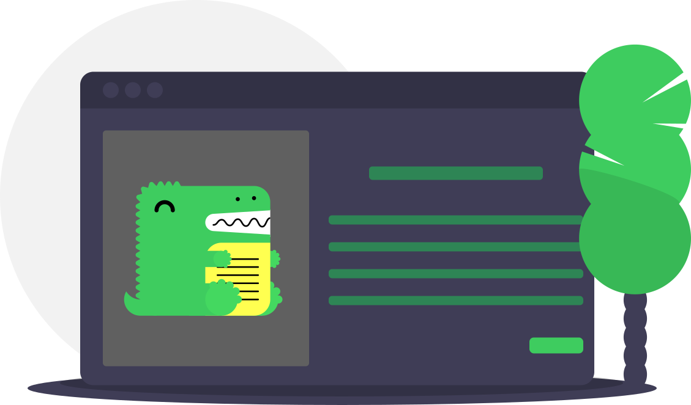
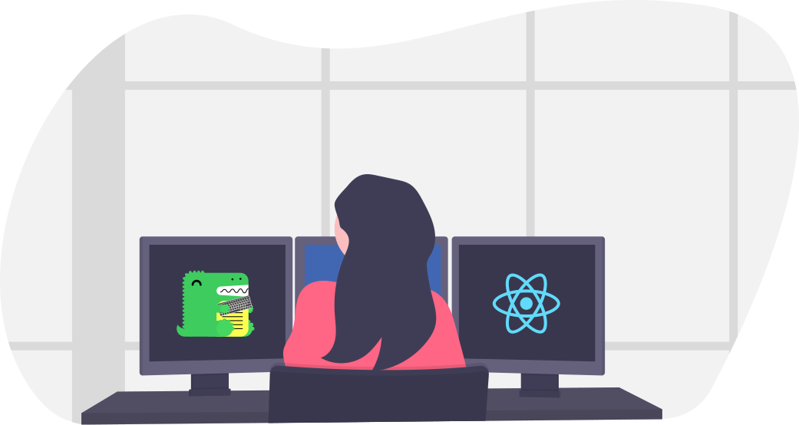

KolTigin Site
Dinozorlar harikadır
KolTigin Site h2

Kullanımı kolay
Docusaurus, web sitenizi hızlı bir şekilde çalışır hale getirmek için sıfırdan kolayca kurulabilecek ve kullanılacak şekilde tasarlandı.

Önemli Olana Odaklanın
Docusaurus, belgelerinize odaklanmanızı sağlar, biz de işleri yaparız. Devam edin ve dokümanlarınızı dokümanlar dizinine taşıyın.

React tarafından desteklenmektedir
React'i yeniden kullanarak web sitenizin düzenini genişletin veya özelleştirin. Docusaurus, aynı üstbilgi ve altbilgiyi yeniden kullanırken genişletilebilir.